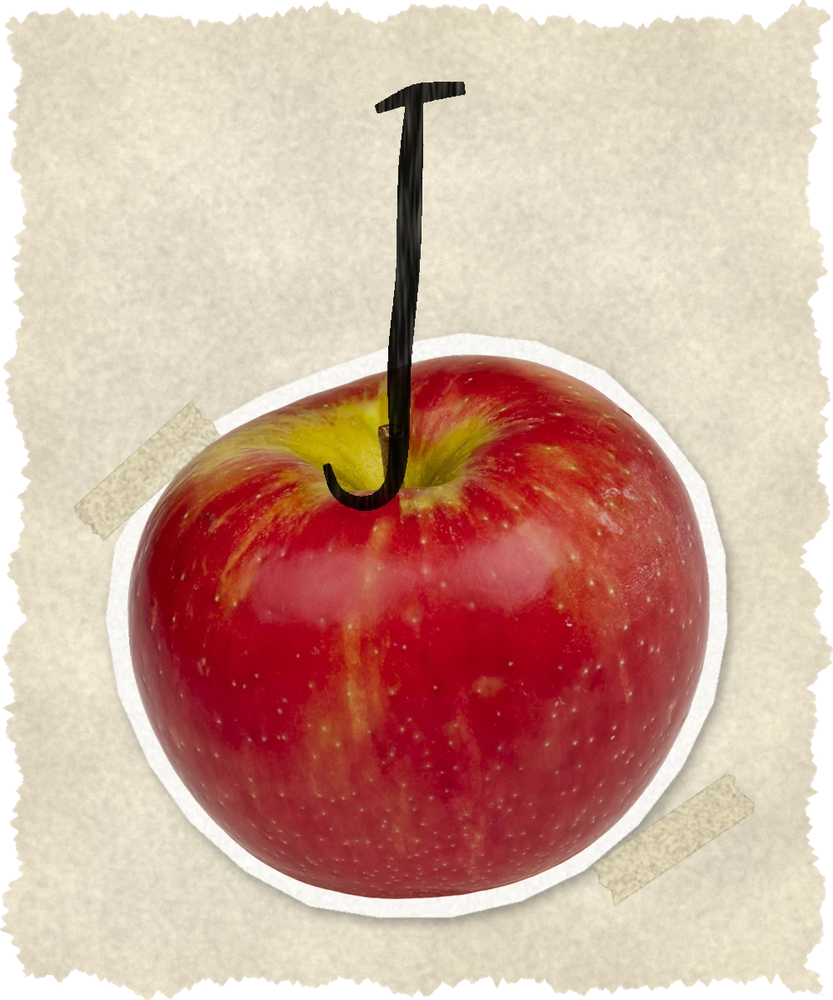

Abriendo el manuscrito…
No se pudo abrir el PDF. Revisa tu conexión y vuelve a intentarlo.
Hagamos literatura, empañá los vidrios.
— de «Barro y bananos»

Abriendo el manuscrito…
No se pudo abrir el PDF. Revisa tu conexión y vuelve a intentarlo.